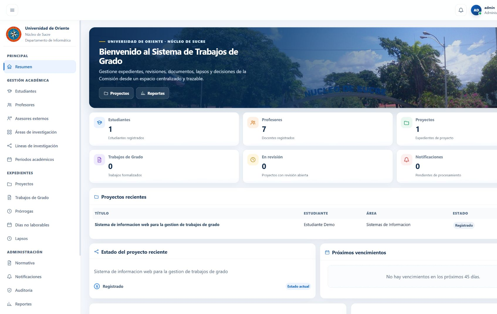

Academic workflow · Java · Case study 01
UDO Thesis Management
From a thesis proposal to committee review, document versions and a defense schedule. One traceable academic workflow.
Java 21 / Spring Boot / JPA / SQL

The problem
Thesis administration involves documents, committee decisions, assignments and deadlines. A collection of disconnected records makes the current stage and its history difficult to follow.
The implemented workflow
- Create a proposal and maintain its academic file.
- Upload document versions and resolve review observations.
- Confirm reviewer recommendations, record individual decisions and close the committee review.
- Move an approved proposal into a thesis, designate a jury and schedule the defense.
- Inspect the activity history and export filtered reports.
Architecture and decisions
A Spring Boot application serves a responsive interface and REST endpoints. Service-layer rules coordinate academic states and assignments; JPA persists related records. Flyway versions the schema. Spring Security provides authenticated internal roles and CSRF protection. The isolated demo uses in-memory H2 with fictional people and records.
Verified on Windows · 7 October 2026
What was checked
Maven clean verify passed 36 baseline tests on Windows with Java 21. The local browser completed the academic workflow using synthetic records. The demonstration was assembled from real application screenshots and checked with ffprobe: 1920×1080, 30 fps, 150 seconds, no audio track.
A 2:30 silent walkthrough
Prepared for EgoTECHWORLD. An edited walkthrough using screenshots of the actual Windows application; this is not a continuous screen recording. English captions explain the workflow. No microphone or audio track is required.
The original silent file is preserved locally; a separate script can add narration later without overwriting it.
Current boundaries
The source repository is private. No institutional database or student records are shared here. The PostgreSQL production environment was not connected or verified. Student and professor self-service portals are outside the implemented internal commission workflow.